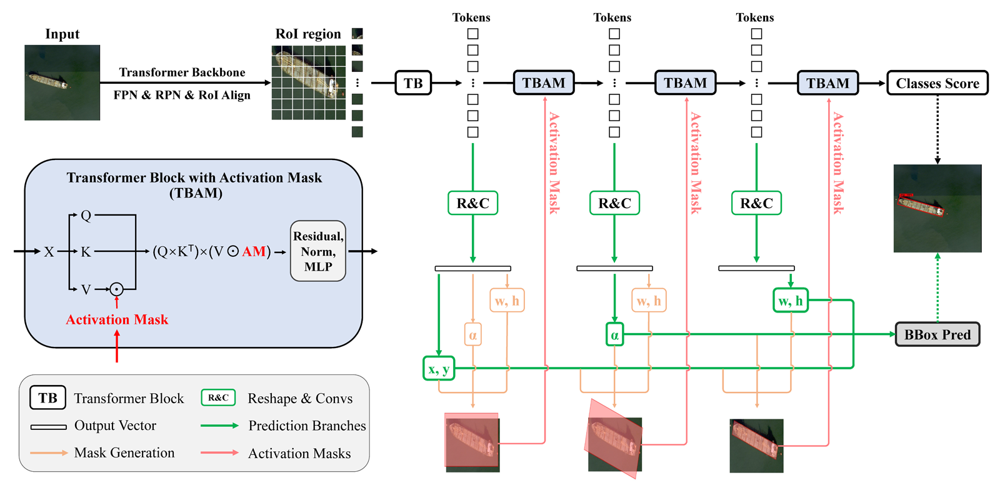
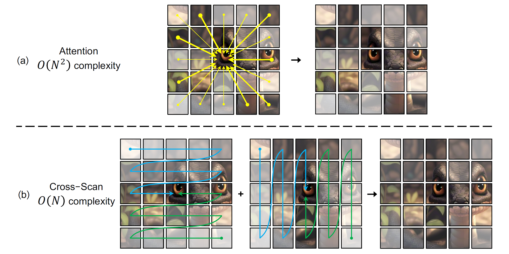
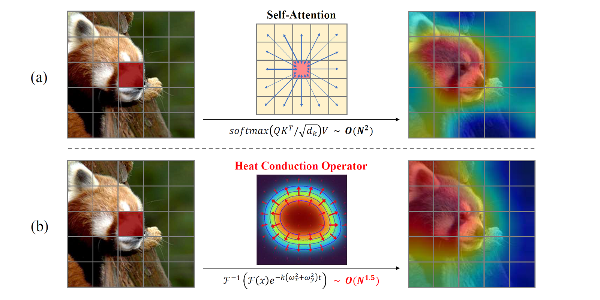
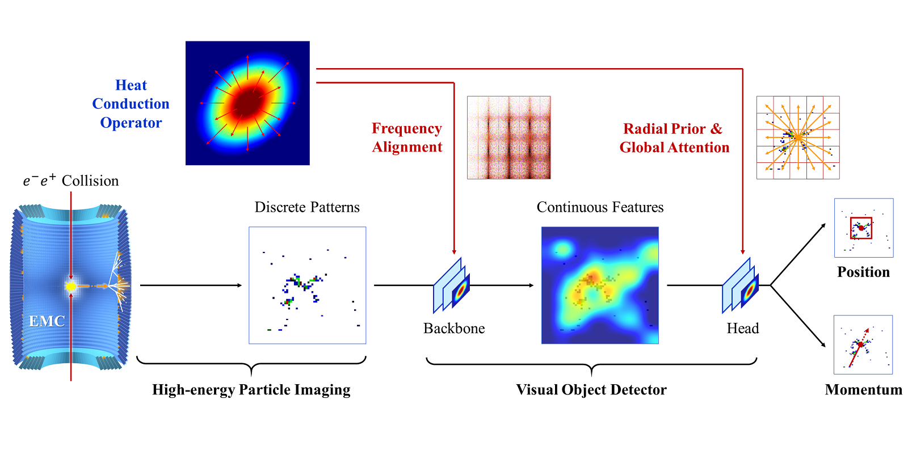
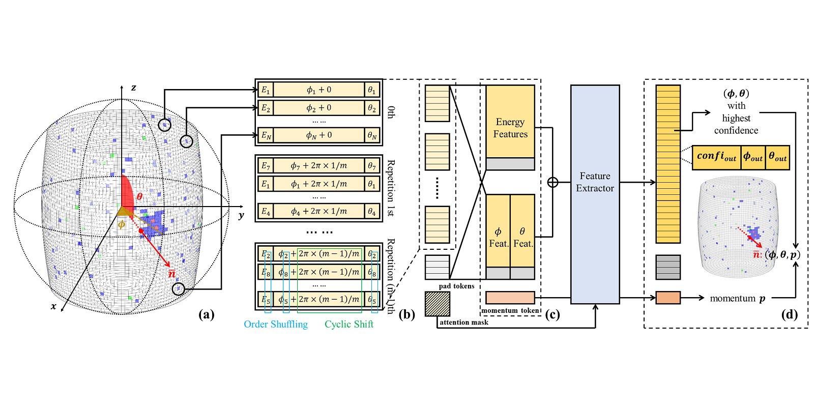

俞洪田博士研究生
|
|
我是 中国科学院大学 电子电气与通信工程学院 机器学习与感知实验室（LAMP） 的在读博士研究生，师从 叶齐祥 教授和 刘云帆 博士后；同时自2024年9月起，也在国家人工智能专项 北京中关村学院 进修。我于2021年6月获得中国科学院大学的工学学士学位。
我的研究兴趣主要集中在计算机视觉领域，特别是目标检测与表征学习方向。目前，我致力于“人工智能×高能物理”方面的研究，并担任北京中关村学院学生自主立项项目“高能物理海量数据的智能物理分析模型及应用”的立项人与负责人。
|  |
Spatial Transform Decoupling for Oriented Object Detection
Hongtian Yu, Yunjie Tian, Qixiang Ye, Yunfan Liu The 38th Annual AAAI Conference on Artificial Intelligence, 2024 [论文] [arXiv] [代码] |
|  |
VMamba: Visual State Space Model
Yue Liu, Yunjie Tian, Yuzhong Zhao, Hongtian Yu, Lingxi Xie, Yaowei Wang, Qixiang Ye, Yunfan Liu The 37th Advances in Neural Information Processing Systems, 2024 [论文] [arXiv] [代码] [旋转目标检测应用示例] |
|  |
vHeat: Building Vision Models upon Heat Conduction
Zhaozhi Wang, Yue Liu, Yunfan Liu, Hongtian Yu, Yaowei Wang, Qixiang Ye, Yunjie Tian [arXiv] [代码] |
|  |
Vision Calorimeter: Migrating Visual Object Detector to High-energy Particle Images
Hongtian Yu, Yangu Li, Yunfan Liu, Yunxuan Song, Xiaorui Lyu, Qixiang Ye In Peer Review: IEEE Transactions on Image Processing 2025 [arXiv] [代码] |
|  |
ANT: Anti‑Neutron Transformer for High‑Energy Particle Detection
Hongtian Yu, Yangu Li, Yuyang Huang, Xiaorui Lyu, Qixiang Ye In Peer Review: Pattern Recognition 2026 [代码] |